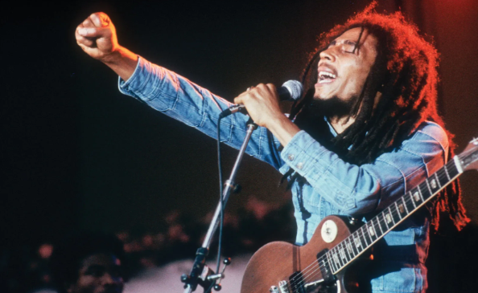

Artistas
Artistas más representativos de cada género
Michael Jackson - Pop
Conocido por la mayoría del mundo por ser el Rey del Pop. Michael Joseph Jackson nació el 29 de agosto de 1958 en Gary, Indiana, EE. UU. Comenzó su carrera musical a una edad temprana como miembro del grupo familiar The Jackson 5 junto a sus hermanos. La banda firmó un contrato con Motown Records y alcanzó el estrellato a finales de la década de 1960. Michael Jackson pronto se destacó como el líder de la banda debido a su excepcional talento vocal y habilidades de baile. En 1971, lanzó su primer álbum en solitario, "Got to Be There", marcando el inicio de su carrera en solitario. Su álbum "Off the Wall" en 1979 y, sobre todo, "Thriller" en 1982, lo catapultaron a la fama mundial. "Thriller" se convirtió en el álbum más vendido de todos los tiempos, con éxitos como "Billie Jean" y "Beat It". Su estilo de baile único, que incluía el famoso "moonwalk", se convirtió en un sello distintivo. A lo largo de su carrera, Jackson continuó lanzando álbumes exitosos, como "Bad", "Dangerous" y "HIStory: Past, Present and Future, Book I". También se destacó por su caridad y apoyo a diversas causas humanitarias. Sin embargo, la vida de Michael Jackson estuvo marcada por la controversia, incluyendo transformaciones físicas notables y acusaciones de abuso infantil. Estos problemas legales y su salud debilitada se sumaron a la atención mediática constante. Michael Jackson falleció el 25 de junio de 2009 a los 50 años debido a una intoxicación aguda de propofol. A pesar de las controversias que rodearon su vida, su legado artístico perdura y su influencia en la música y la cultura popular es innegable.
Bad Bunny - Trap
Bad Bunny, cuyo nombre real es Benito Antonio Martínez Ocasio, es un cantante, rapero y compositor de Puerto Rico. Nació el 10 de marzo de 1994 en Vega Baja, Puerto Rico. Comenzó su carrera musical de manera independiente, publicando canciones en SoundCloud. Su estilo innovador y su mezcla de géneros musicales como el reggaetón, trap y hip-hop lo llevaron a la fama rápidamente. Su primer álbum de estudio, "X 100pre," se lanzó en 2018 y recibió elogios de la crítica, consolidándose como un artista destacado en la escena musical latina. Bad Bunny es conocido por su estilo distintivo, su actitud desinhibida y su compromiso con temas de conciencia social y diversidad. El éxito de Bad Bunny continuó con álbumes como "YHLQMDLG" y "El Último Tour Del Mundo," que rompieron récords y alcanzaron la cima de las listas de éxitos. Además de su música, ha incursionado en la moda y ha participado en películas y programas de televisión. Bad Bunny ha colaborado con numerosos artistas internacionales y ha sido reconocido con múltiples premios, incluyendo Grammy Latinos y premios Billboard. Su influencia y su capacidad para cruzar fronteras culturales lo han convertido en un ícono global de la música latina contemporánea. Hace dos semanas, Bad Bunny sacó un álbum llamado: Nadie sabe lo que va a pasar mañana, con colaboraciones como Mora, Eladio Carreón o Bryant Myers, que ha sido un hit mundial, ya que ha tenido un éxito, reconocido por la mayoría como el álbum del año.
Eminem - Rap
La historia de Eminem, cuyo nombre real es Marshall Bruce Mathers III, es la de un rapero y compositor estadounidense que se ha convertido en una de las figuras más influyentes del hip-hop y la música en general. Nació el 17 de octubre de 1972 en St. Joseph, Missouri, EE. UU. Eminem se crió en Detroit, Míchigan, y tuvo una infancia difícil marcada por la pobreza y la discriminación. Comenzó a rapear a una edad temprana como una forma de escape y expresión. En 1996, lanzó su primer álbum independiente, "Infinite", pero fue su segundo álbum, "The Slim Shady LP" (1999), producido por Dr. Dre, lo que lo catapultó a la fama. El álbum ganó un Grammy y estableció a Eminem como un destacado rapero de la escena hip-hop. A lo largo de su carrera, Eminem ha lanzado una serie de álbumes exitosos, incluyendo "The Marshall Mathers LP" y "The Eminem Show", que han recibido elogios de la crítica y se han convertido en discos de diamante. Sus letras a menudo abordan temas personales, la lucha contra las adicciones y cuestiones sociales. Eminem también es conocido por su alter ego, Slim Shady, y su estilo lírico provocador y controvertido. Ha sido objeto de polémicas debido a sus letras y enfrentamientos públicos con otros artistas. A pesar de los altibajos en su vida personal y carrera, Eminem ha demostrado una habilidad sobresaliente para la narración y la rima, y su impacto en la música rap es innegable. Ha ganado numerosos premios, incluyendo varios premios Grammy, y sigue siendo una figura destacada en la música hip-hop en todo el mundo.
Bon Jovi - Rock
Bon Jovi es una banda estadounidense de rock formada en 1983 en Nueva Jersey por su líder y vocalista, Jon Bon Jovi. La formación actual la completan el teclista David Bryan, el batería Tico Torres, el bajista Hugh McDonald y el guitarrista Phil X. Este último sustituyó a Richie Sambora, quien abandonó la formación en 2013 debido a diferencias con sus compañeros, tras haber permanecido treinta años en ella. Es uno de los grupos de rock más exitosos de todos los tiempos, ha vendido más de 130 millones de discos y ofrecido más de 2800 conciertos en cincuenta países. Además está considerado como un icono global de la música y forma parte del Salón de la Fama del Rock and Roll. Debutaron en 1984 con su álbum homónimo, cuyo sencillo «Runaway» fue el primero en entrar al Billboard Hot 100. En 1986 se dieron a conocer internacionalmente con la salida de "Slippery When Wet”, que se convirtió en el álbum más vendido de 1987 en los Estados Unidos y supuso un gran triunfo a nivel mundial con veintiocho millones de copias vendidas calculadas hasta 2008. La crítica musical considera que este lanzamiento impulsó al glam metal a entrar en la corriente principal y consagrarse en las listas de ventas. En 1988 publicaron New Jersey, con el que obtuvieron un impacto similar. Durante esos años lograron colocar cuatro sencillos en la cima del Hot 100: «You Give Love a Bad Name», «Livin' on a Prayer» —designada la mejor canción de los ochenta por la cadena VH1—, «Bad Medicine» y «I'll Be There for You». En los años noventa se desmarcan del sonido glam que les había caracterizado —género que decayó debido al auge del rock alternativo— y renovaron tanto su música como su vestuario. La salida de Keep the Faith en 1992 supuso una ruptura con el Bon Jovi de los ochenta, pero a pesar de recibir críticas por su cambio de estilo tuvo una buena acogida comercial y logró vender doce millones de ejemplares hasta 2002.
Bruno Mars - Funk
Peter Gene Hernández (Honolulú, Hawái, 8 de octubre de 1985), conocido artísticamente como Bruno Mars, es un cantante, compositor, productor musical y bailarín estadounidense. Comenzó a crear música desde una edad muy temprana y actuó en muchos escenarios de su pueblo natal a lo largo de su niñez, realizando imitaciones. Se graduó de la escuela secundaria y se mudó a Los Ángeles, donde continuó con su carrera musical. Después de una temporada sin éxito con Motown Records, Mars firmó con Atlantic Records en 2009. Llegó a ser reconocido como artista en solitario después de prestar su voz y haber coescrito los coros para las canciones «Nothin' on You» de B.o.B, y «Billionaire» de Travie McCoy. También coescribió los éxitos internacionales «Right Round» de Flo Rida, «Wavin' Flag» de K'naan y «Fuck You!» de Cee Lo Green. El 4 de octubre de 2010 lanzó su álbum de estudio debut, Doo-Wops & Hooligans. Logró las mejores posiciones en el Billboard Hot 100 gracias a sus sencillos «Just the Way You Are» y «Grenade». Su segundo álbum fue Unorthodox Jukebox, con el que logró llegar al primer puesto de la misma lista con las canciones «Locked out of Heaven» y «When I Was Your Man». Vendió más de 170 millones de copias a nivel mundial, lo que lo hace uno de los artistas con más ventas. Siete de sus canciones se encuentran entre los sencillos más vendidos de la historia a nivel internacional. Su música se caracteriza por mostrar una amplia gama de estilos e influencias de géneros musicales variados. Trabajó con grandes artistas de diferentes géneros y esas experiencias, reconoce Mars, han tenido impacto en su propia música. Cuando era niño fue muy influenciado por artistas como Elvis Presley y con frecuencia se hacía pasar por él desde una edad temprana. Incorpora sonidos inspirados en el reggae, funk, R&B, hip hop, rock, entre otros. Jon Caramanica de The New York Times se refiere a Mars como «uno de los cantantes más versátiles y accesibles en el pop». Mars forma parte del trío de compositores bautizados como The Smeezingtons, formado junto a Philip Lawrence y Ari Levine. Escribió letras para una decena de artistas como Sugababes, Adele, Flo Rida, Cee Lo Green y Taemin, integrante del grupo SHINee.
Daddy Yankee - Reggaeton
(Nombre artístico de Raymond o Ramón Luis Ayala Rodríguez; San Juan de Puerto Rico, 1977) Cantante, compositor y productor puertorriqueño, uno de los más destacados representantes del reguetón. La rica variedad y vitalidad de la música latinoamericana actual procede tanto de la evolución y surgimiento de nuevos géneros musicales como de su constante fusión; de finales de la década de 1990 data la popularización de un nuevo estilo que, como tantos otros, había ido gestándose lentamente a partir de anteriores y recientes tendencias: el reguetón o reggaeton. La combinación del reggae jamaicano con el hip hop y el rap afroamericano dio lugar a este estilo bailable de ritmo sincopado que, ejecutado electrónicamente y acompañado por letras recitadas de fuerte contenido social o erótico, pronto causó furor entre los jóvenes. Aunque los antecedentes del reguetón pueden rastrearse fuera de Puerto Rico, ha acabado por considerarse un género boricua; ciertamente, la isla fue su principal foco de irradiación, y oriundos de este país son pioneros como Vico C y sus máximos divulgadores e intérpretes, entre los que sobresalen Wisin y Yandel, Don Omar y el mismo Daddy Yankee.
Bob Marley - Reggae
Bob Marley fue un influyente músico, compositor y líder del movimiento del reggae, nacido el 6 de febrero de 1945 en Jamaica y fallecido el 11 de mayo de 1981. Su carrera musical abarca desde finales de la década de 1960 hasta su muerte en 1981, durante la cual se convirtió en un ícono mundial de la música y la cultura. Marley comenzó su carrera musical en la década de 1960 con el grupo The Wailers, que también incluía a Peter Tosh y Bunny Wailer. A lo largo de los años, The Wailers lanzaron varios álbumes exitosos en Jamaica, pero su verdadera fama internacional llegó en la década de 1970 con el lanzamiento de álbumes como "Catch a Fire" (1973), "Burnin'" (1973) y "Natty Dread" (1974). Bob Marley se convirtió en un defensor del movimiento rastafari y sus canciones a menudo abordaban temas de justicia social, igualdad y amor. Algunas de sus canciones más famosas incluyen "No Woman, No Cry", "Redemption Song", "One Love", "Jamming" y "Three Little Birds". A lo largo de su carrera, Marley y The Wailers se presentaron en todo el mundo, llevando el reggae y su mensaje de unidad a audiencias internacionales. Su álbum "Exodus" (1977) es ampliamente considerado como uno de los mejores álbumes de todos los tiempos y ayudó a popularizar el reggae en todo el mundo. A pesar de su muerte prematura debido al cáncer a los 36 años, el legado de Bob Marley sigue siendo inmenso. Su música sigue siendo popular en todo el mundo y su influencia en la cultura y la política sigue siendo significativa. Bob Marley es recordado como un símbolo de paz, amor y resistencia, y su música continúa inspirando a generaciones de personas en todo el mundo.
